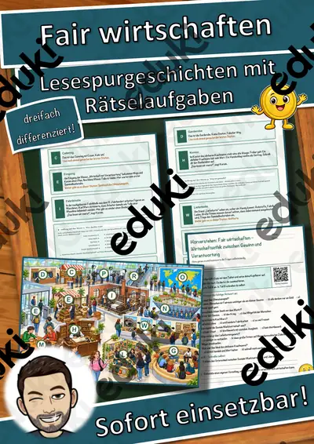

Lesespur: Streit und Konflikte fair lösen – Lesespurgeschichte mit Rätseln (Klasse 7)
Streit und Konflikte fair lösen – Lesespurgeschichte Ethik (Klasse 7)Begib dich mit deiner Klasse auf eine spannende Lesespur über das faire Streiten! Lars und Yara haben sich gestritten und gehen in ihrer Schule einen Streitschlichter-Weg ab – vom Treffpunkt über die Ruhe-Ecke, die Lausch-Ecke, die Station Perspektive, die Rede-Ecke, den Ideentisch und den Handschlag-Punkt bis zum Ziel. Schritt für Schritt lernen sie, wie man einen Konflikt fair löst: sich beruhigen, zuhören, die Sicht des anderen verstehen, die eigenen Gefühle in Ich-Botschaften ausdrücken und gemeinsam eine Lösung finden. Ihre kleine Sprechblasen-Figur Fips begleitet sie. Am Ende jedes Abschnitts verrät ein Hinweis den nächsten Ort auf dem Schulweg-Plan – nur wer richtig liest und mitdenkt, findet den Weg und sammelt alle geheimen Buchstaben zum Lösungswort.
Die perfekte Lesespur für den ETHIKUNTERRICHT und das soziale Lernen der Sekundarstufe I: Sie verbindet motivierendes, sinnentnehmendes Lesen mit wichtigen Kompetenzen der Streitschlichtung und Kommunikation – und schult zugleich das genaue Arbeiten. Das Material ist SOFORT EINSETZBAR und in DREI DIFFERENZIERUNGSSTUFEN (leicht ★ / mittel ★★ / schwer ★★★) angelegt, sodass alle Jugendlichen einer Klasse am selben Thema arbeiten können. Neutral und wertfrei gehalten.WICHTIG: Das komplette Material ist sowohl in FARBE als auch in SCHWARZ-WEISS enthalten – ideal zum Sparen von Druckkosten.DAS IST ENTHALTEN
- Lesespurgeschichte in 3 Niveaus (leicht, mittel, schwer)
- farbiger Schulweg-Plan als Suchkarte
- Hörverstehen mit QR-Code zur MP3 (selbstständiges Hören mit Kopfhörern)
- vier Aufträge auf dem Weg: ein Verbinde-Rätsel, ein Quiz, eine Rechenaufgabe und ein Steckbrief
- Rätselseite (Wörter-Suchsel + Wissensfragen)
- Ausmalbild zum Thema
- ausführliches Lösungsblatt für die Lehrkraft
- alles zusätzlich als komplette Schwarz-Weiß-VarianteSO FUNKTIONIERT DIE LESESPURDie Jugendlichen lesen ab START, entnehmen dem Text einen Hinweis auf eine Station des Weges, suchen sie auf dem Plan und lesen dort weiter. An jeder richtigen Station gibt es einen Sammelbuchstaben. Eingebaute Sackgassen (Kopierraum, Sporthalle, Trinkbrunnen, Mensa) gehören zwar zur Schule, sind aber keine Stationen der Spur und dienen der Selbstkontrolle. Am Ende werden die gesammelten Buchstaben umgestellt und ergeben ein geheimes Lösungswort. (Die Lösungen sind selbstverständlich nur im Lösungsblatt für die Lehrkraft enthalten.)INHALTLICHER SCHWERPUNKTStreit gehört zum Zusammenleben dazu – entscheidend ist, wie man ihn löst. Der erste Schritt ist, sich zu beruhigen: Wer wütend ist, sagt schnell Dinge, die er später bereut, deshalb hilft es, zuerst durchzuatmen (Deeskalation). Dann folgt das Zuhören: Jeder darf ausreden, ohne unterbrochen zu werden, denn nur so versteht man, worum es dem anderen geht. Ein Perspektivwechsel – die Sache einmal mit den Augen des anderen zu sehen – macht es leichter, ihn zu verstehen. Statt Vorwürfe zu machen, drückt man seine Gefühle in Ich-Botschaften aus („Ich habe mich verletzt gefühlt“ statt „Du bist gemein“). Anschließend sammeln beide gemeinsam mögliche Lösungen und wählen einen fairen Weg, bei dem keiner als Verlierer dasteht. Am Ende reicht man sich die Hand. So wird aus einem Streit oft sogar etwas Gutes, weil man sich danach besser versteht. Das Material lädt zum Üben und Nachdenken über den eigenen Umgang mit Konflikten ein.ABGEDECKTER LEHRPLAN (Klasse 7, Ethik)
- Ethik (LehrplanPLUS Bayern) – Gymnasium „Konflikte und ihre Regelung"; Realschule „Mit Gleichaltrigen gut zurechtkommen": Konflikte annehmen, Strategien zur Deeskalation und wertschätzenden Kommunikation anwenden, einen begründeten Standpunkt vertreten und Mobbing entgegenwirken.
- Deutsch – Lesen mit Texten und Medien umgehen: Lesestrategien anwenden, Texten gezielt Informationen entnehmen, sinnentnehmend und selektiv lesen; Zuhören: einem Sachhörtext konzentriert folgen (Hörverstehen mit MP3).
- Mathematik – Rechnen im Sachzusammenhang.
- Fächerübergreifend / Kompetenzen: soziales Lernen, wertschätzende Kommunikation, Perspektivübernahme, genaues Lesen und Prüfen, Konzentration und Ausdauer, kreatives Gestalten (Ausmalbild).
Geeignet für Freiarbeit, Stationenlernen, Vertretungsstunden, Wochenplan, das Streitschlichter-Programm und Homeschooling. Klassenstufe 7 (differenziert einsetzbar auch in angrenzenden Jahrgangsstufen).
Ähnliche Materialien

Soziales Lernen – Gefühle, Streit lösen, Klassenrat: Heft mit Postern und Karten Kl. 1–4

Fair Play und Spielregeln: Stationenlernen Sport

Lesespur: Streit schlichten: wir finden eine Lösung – Lesespurgeschichte mit Rätseln (Klasse 3)

Mit Konflikten umgehen - Konfliktlösung (Tafelmaterial) - Konfliktlöser

Lesespur: Fair teilen und abgeben – Lesespurgeschichte mit Rätseln (Klasse 1)

Streit und Gewalt zuhause - Homeschooling

Lesespur: Eishockey: schnell, hart und fair – Lesespurgeschichte mit Rätseln (Klasse 7)
